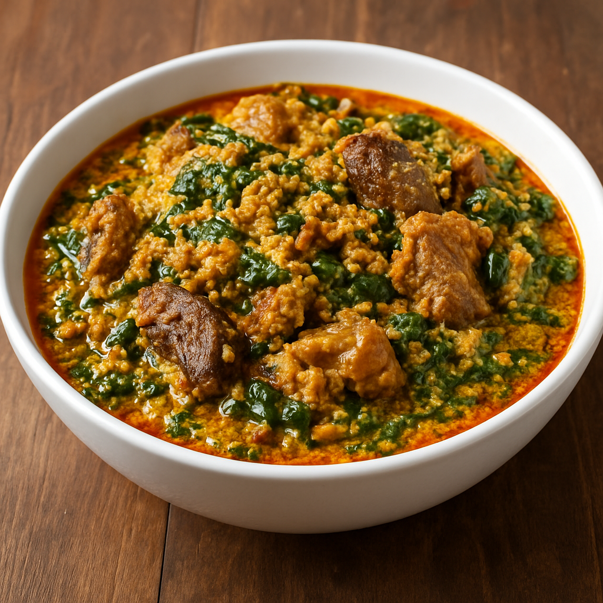

Nigerian Egusi Soup

Nigerian Egusi soup
Egusi soup is a rich and flavorful Nigerian soup made with ground melon seeds, palm oil, assorted meats or fish, and leafy vegetables.
It’s thick, hearty, and commonly enjoyed with swallows like pounded yam or eba.
Ingredients
- Ground egusi (melon seeds) — 1 cup
- Palm oil — 3–4 tablespoons
- Assorted meats (beef, shaki, etc.) — 500 g
- Stockfish or dried fish — optional
- Crayfish (ground) — 2 tablespoons
- Pepper and seasoning cubes — to taste
- Salt — to taste
- Meat stock — about 2 cups
- Ugu (fluted pumpkin) or spinach — 1 small bunch, chopped
- Onions — 1 small (blended or chopped)
- Locust beans (iru) — optional